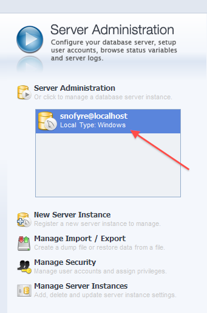
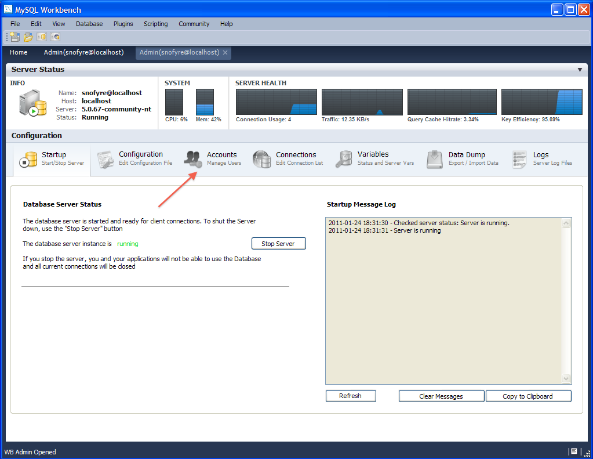

SNOMED CT, Java and MySQL are registered trademarks
We now create a user account for Snofyre on our local MySQL Server. Please note that Snofyre will need these account details, to access the MySQL backend. So these steps are mandatory.
-
Double click on the snofyre@localhost button in the Server
Administration section of the workbench home screen as shown below.

-
The workbench should now display the Admin screen, as shown below. In this
screen, click the Accounts tab as shown below.

The workbench screen now displays the Account Management Screen as shown below. You may see existing user accounts listed under 'User Accounts' as shown below.
-
Click on Add Account button shown below, to add a new
user account for Snofyre to use.

-
Fill in the details for the new user account as follows:
- Login Name : snofyre
- Password : somepasswordhere
- Confirm password : somepasswordhere
- Limit connectivity to hosts matching : localhost
 Note: We recommend using the Login Name snofyre for the account.
Note: We recommend using the Login Name snofyre for the account. -
After entering the details above, click on the Apply
button as shown below.
The login credentials for the new user account for Snofyre to use have now been set up.